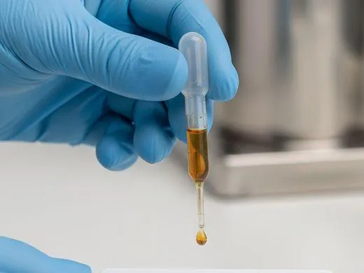

Testes rápidos para erliquiose e babesiose
Como investigar soluções de diagnóstico rápido para erliquiose e babesiose que possam atender às necessidades da prática veterinária?
- Diagnóstico veterinário
- Protótipo

Nossa abordagem
A frente reúne o desenvolvimento de um protótipo para testes rápidos e o planejamento das avaliações necessárias para caracterizar seu funcionamento.
Próximo marco
Avaliar desempenho analítico e diagnóstico.
Evidências e limites
Situação editorial em 24 de novembro de 2026.
O que está documentado nesta apresentação
O protótipo integra o portfólio informado pela ArgosAI. Ainda não são apresentados estudos de validação, resultados de sensibilidade ou especificidade, nem comparações com métodos de referência.
O que ainda precisa ser demonstrado
O protótipo não está disponível para uso diagnóstico. Seu desempenho analítico e diagnóstico precisa ser estabelecido por estudos apropriados.
Uma oportunidade de construir em conjunto.
Capacidades de desenvolvimento de ensaios, caracterização analítica e estudos comparativos com métodos de referência podem apoiar a evolução do protótipo.
Escopo, responsabilidades, acesso a informações e condições de colaboração são definidos caso a caso.
Preparar uma conversa sobre este programa